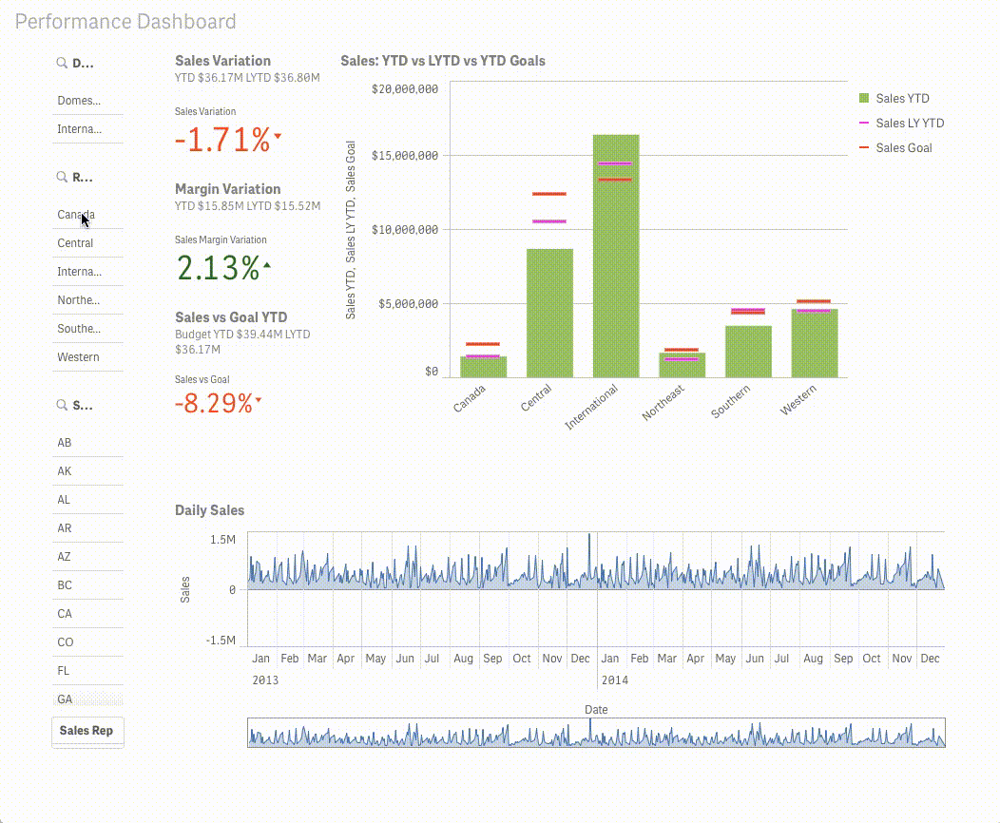

Benefícios
Com as soluções personalizadas IT Systems você analisa todas as áreas do negócio em um único ambiente, de forma fácil e visual. A inteligência de dados aumenta a produtividade da operação e embasa a tomada de decisão estratégica. Veja outros benefícios para tornar seu negócio ainda mais competitivo:

Planejamento
Potencialize o planejamento estratégico da sua organização, identifique oportunidades de melhoria e gere insights para desenvolver o seu negócio.

Indicadores Analíticos
Defina as melhores ações a partir de indicadores e métricas para o crescimento do negócio, com análise comparativa e acompanhamento em tempo real.